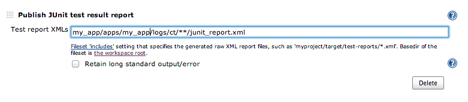

Common Test: Generating JUnit style xml reports for Jenkins
Introduction
UPDATE: There's an example at github with a template for a complete otp/rebar application, being builded at this jenkins.
JUnit/Surefire -style reports are very useful, because you can make Jenkins use them to display nice reports for erlang projects. Fortunately, since Mar 20th, the default common test distribution comes with a cth_surefire hook (see more about common test hooks) that will generate what we need.
Using it
To enable it, we just need to specify the -ct_hooks cth_surefire option when running ct. If you're using rebar, add something like this to your rebar.config file:
{ct_extra_params, "-ct_hooks cth_surefire -logdir logs/ct"}.
After the tests are run, you should see a junit_report.xml file, inside your logs directory (e.g: logs/ct/ct_run.mynode\@local.local.2013-06-29_19.13.24).
Publishing the results in Jenkins
Just add a Post build action, the Publish JUnit test result report:
{kind=link}
Sample report
NOTE: Test suite names are intentionally obfuscated.
{kind=link}